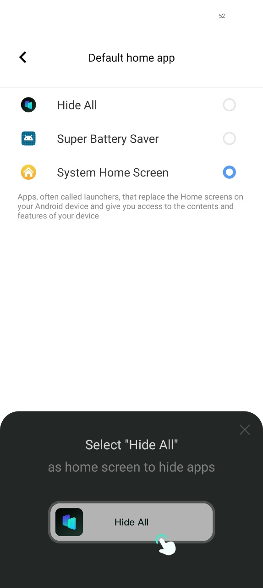
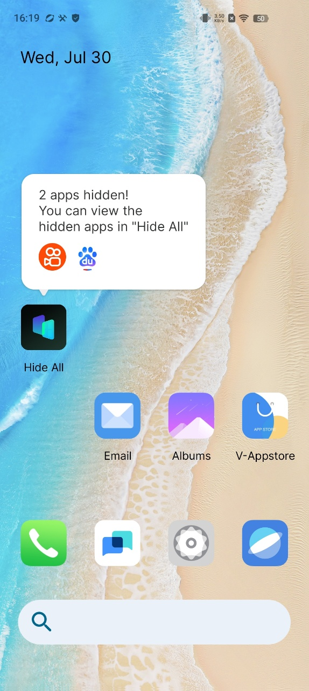
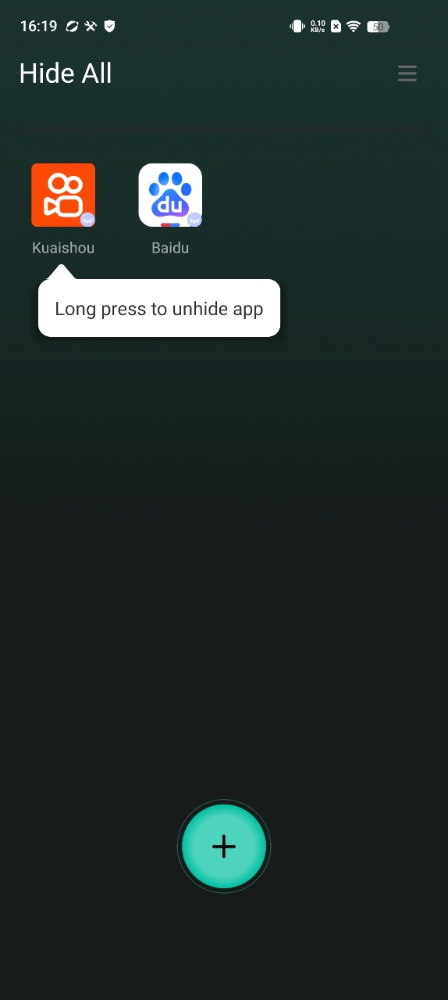
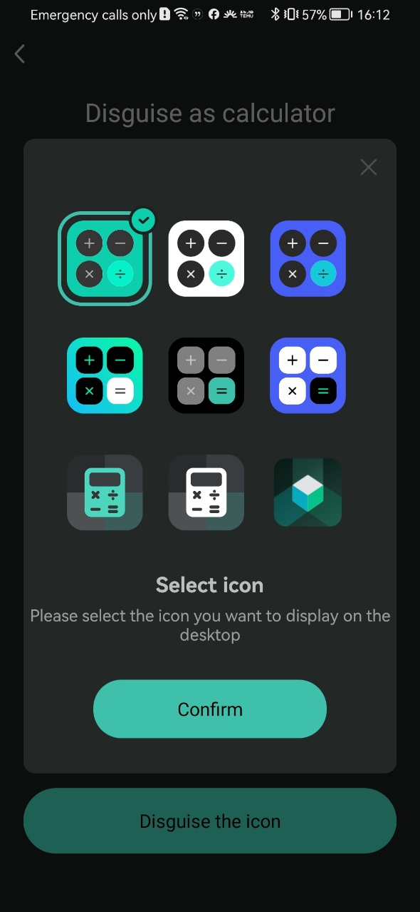

In an era where our smartphones are extensions of our personalities and vaults of our most sensitive data, visual privacy has become paramount. The mere presence of certain applications on your home screen can invite unwanted questions, scrutiny, or even threats to your security. This is where the power of an apps icon hider application becomes indispensable. These specialized tools offer a sophisticated layer of stealth, moving beyond simple app locking to make sensitive applications completely invisible to prying eyes.
The Critical Need for Icon Hiding
The apps on your phone tell a story. A dating app, a private banking tool, a cryptocurrency wallet, a photo gallery containing intimate memories, or even a secondary messaging app for work—each icon is a data point. Leaving these in plain sight can lead to:
- Personal Embarrassment: Unwanted discovery of personal apps by friends, family, or colleagues.
- Targeted Theft: Advertising valuable targets like financial apps to thieves.
- Privacy Invasion: Allowing temporary users of your device (e.g., children, coworkers) to easily access applications they shouldn't. An apps icon hider application directly addresses this vulnerability by removing the visual cue—the icon itself—from your device's launcher, app drawer, and search results.
Core Functionality: How an Apps Icon Hider Application Works
The primary mission of any apps icon hider application is to make selected apps disappear from the standard user interface. The implementation varies by operating system but generally follows these principles:
On Android:
Android's open nature allows a robust apps icon hider application to function through several methods:
1. Launcher Integration: Many hider apps function as or integrate with a custom launcher. They maintain an internal database of your apps but simply do not draw the icons of the ones you've chosen to hide on the home screen or app drawer.
2. Package Disabling: Some advanced utilities use device administrator permissions to temporarily "disable" the app package. The app remains installed with its data intact but becomes invisible and non-functional until re-enabled. This is a more system-deep approach to icon hiding.
3. Sandboxing/Cloning: Premium hider apps create a secure, encrypted container or sandbox within your device. They clone the target applications into this space. The original app can be uninstalled, leaving only the hidden, cloaked version within the apps icon hider application's environment, which itself is often disguised as an innocent utility like a calculator or flashlight.
On iOS:
Apple's stricter sandboxing limits the functionality of a true apps icon hider application. However, workarounds exist:
1. Offloading Apps: A manual process where you can remove an app from the Home Screen while keeping its data on the device. You can find it later via the App Library search. This is a native but limited form of icon hiding.
2. Screen Time Restrictions: A clever method involves using Screen Time settings to "Hide" apps from the Home Screen. While not a dedicated apps icon hider application, it achieves a similar visual result for specific apps.
3. Camouflage Apps: Some applications create a vault that looks like a different app (e.g., a news reader) but contains hidden web apps or bookmarks behind a passcode, offering a form of icon-based misdirection.
Key Features of a High-Quality Apps Icon Hider Application
Beyond basic hiding, a superior apps icon hider application will offer a suite of security features:
- Access Control: Biometric (fingerprint, face unlock) or password/PIN protection to access the hider app itself.
- Decoy Mode: The hider app disguises itself as a mundane, system-like app (e.g., a calculator, settings panel, or system info tool) to avoid detection.
- Intruder Countermeasures: Features like fake crash screens, background photo capture on failed access attempts, and automatic data wiping after multiple wrong passwords.
- Notification Hiding: The ability to suppress previews and alerts from hidden apps to maintain the illusion that they are not installed.
- Performance Optimization: Many hiders can also freeze hidden apps in the background, saving battery life and RAM.
Choosing and Using an Apps Icon Hider Application Responsibly
When selecting an apps icon hider application, prioritize those with strong reviews, a clear privacy policy, and a proven track record on official app stores. Be wary of applications requesting excessive permissions. Ethically, these tools are designed for legitimate privacy protection—securing financial data, personal communications, and private media. It is crucial to emphasize that an apps icon hider application should never be used for illegal activities or to hide harmful content.
Here is HOW TO USE Hide All:calculator app lock to disguise your app icon：
1. One-tap on the homepage and select to hide apps.

2. When you open the app hide launcher the first time and select apps, it will ask you to set a second home screen. You only need to set it once.

3. Select "Hide All" as home screen to hide apps
4. You do not need to do extra work for hiding applications. Just select apps shown inside the HideAll. It automatically hides the apps as well.
5. To unhide the secret apps, long press the icon and Exit Hidden Mode.
6. Set a password and modify the Hide All appearance on the home screen to enhance privacy and security. You can change the icon of HIDE ALL, make it looks like an ordinary system calculator, and you can also use it to perform calculations.
In the constant battle for personal digital privacy, an apps icon hider application serves as a powerful and strategic tool. It provides a unique form of security through obscurity, ensuring that your most sensitive applications don't just remain locked, but remain entirely unseen. By effectively making your private apps invisible, you gain ultimate control over your digital narrative and who has access to it. For anyone serious about comprehensive mobile security, integrating a reliable apps icon hider application into their privacy toolkit is a logical and highly effective step.